CODING AGENTS AS PIXEL WORLD MODELS
traex/DeepSeek-V4.1-Flash · material_0012
点击播放 · 原生 RGB 像素
逐轮保存的候选
回放视频、检查图与代码变化。
每份候选均可单独播放。实际图片检查记录在下方工具轨迹中。
候选 01播放与检查图
点击播放 · 原生 RGB 像素

展开代码变化
--- 上一保存版本
+++ 本次保存版本
@@ -0,0 +1,453 @@
+from pathlib import Path
+
+import numpy as np
+from PIL import Image, ImageDraw
+from scipy.ndimage import distance_transform_edt, gaussian_filter, zoom
+
+import artifact_io
+
+
+CASE_DIR = Path(__file__).resolve().parent
+WIDTH = 256
+HEIGHT = 144
+FRAMES = 20
+FPS = 4.0
+SS = 3
+RW = WIDTH * SS
+RH = HEIGHT * SS
+
+
+def smoothstep(edge0, edge1, value):
+ t = np.clip((value - edge0) / (edge1 - edge0), 0.0, 1.0)
+ return t * t * (3.0 - 2.0 * t)
+
+
+def upscale_grid(grid, width, height, order=3):
+ return zoom(grid, (height / grid.shape[0], width / grid.shape[1]), order=order)
+
+
+def make_noise_bank(rng):
+ # Smooth 3-D noise keeps the flame coherent while allowing individual licks.
+ shape = (FRAMES + 4, 58, 96)
+ noise_a = gaussian_filter(rng.standard_normal(shape), sigma=(1.7, 3.0, 3.0))
+ noise_b = gaussian_filter(rng.standard_normal(shape), sigma=(1.2, 2.2, 2.2))
+ noise_c = gaussian_filter(rng.standard_normal(shape), sigma=(2.4, 4.0, 4.0))
+ return noise_a, noise_b, noise_c
+
+
+def frame_noise(bank, frame):
+ values = []
+ for index, source in enumerate(bank):
+ field = upscale_grid(source[frame + 2], RW, RH, order=1)
+ field = (field - field.mean()) / (field.std() + 1e-6)
+ values.append(field)
+ return values
+
+
+def make_lead_geometry(rng):
+ points_design = [
+ (79, 109), (82, 102), (88, 97), (96, 98), (102, 94),
+ (110, 96), (117, 90), (125, 93), (132, 88), (140, 91),
+ (148, 88), (157, 92), (166, 96), (174, 103), (176, 109),
+ (171, 116), (161, 121), (150, 122), (138, 119), (126, 122),
+ (113, 119), (101, 121), (89, 117), (82, 113),
+ ]
+ points = [(int(x * SS), int(y * SS)) for x, y in points_design]
+ mask_image = Image.new("L", (RW, RH), 0)
+ ImageDraw.Draw(mask_image).polygon(points, fill=255)
+ mask = np.asarray(mask_image) > 127
+
+ top = min(y for _, y in points)
+ bottom = max(y for _, y in points)
+ left = min(x for x, _ in points)
+ right = max(x for x, _ in points)
+
+ inside_y, inside_x = np.nonzero(mask)
+ seeds = []
+ while len(seeds) < 24:
+ px = rng.uniform(left + 4 * SS, right - 4 * SS)
+ py = rng.uniform(top + 2 * SS, bottom - 2 * SS)
+ if mask[int(py), int(px)]:
+ seeds.append((px, py))
+ seeds = np.asarray(seeds)
+
+ distances = (
+ (inside_x[:, None] - seeds[None, :, 0]) ** 2
+ + (inside_y[:, None] - seeds[None, :, 1]) ** 2
+ )
+ nearest = np.argmin(distances, axis=1)
+ sorted_distances = np.partition(distances, 1, axis=1)
+ facet_edge = np.sqrt(sorted_distances[:, 1]) - np.sqrt(sorted_distances[:, 0])
+ facet_tone = rng.uniform(-0.055, 0.075, len(seeds))[nearest]
+ facet_groove = np.exp(-np.clip(facet_edge, 0, None) / (1.5 * SS))
+
+ facet_tone_full = np.zeros((RH, RW), dtype=np.float32)
+ facet_groove_full = np.zeros((RH, RW), dtype=np.float32)
+ facet_tone_full[inside_y, inside_x] = facet_tone
+ facet_groove_full[inside_y, inside_x] = facet_groove
+ return mask, facet_tone_full, facet_groove_full, (left, top, right, bottom)
+
+
+def render_background(yy, xx, noise):
+ xn = xx / RW
+ yn = yy / RH
+ background = np.empty((RH, RW, 3), dtype=np.float32)
+ background[..., 0] = 7.0 + 3.0 * yn + 1.6 * xn
+ background[..., 1] = 11.5 + 3.8 * yn + 1.2 * xn
+ background[..., 2] = 15.0 + 4.0 * yn + 2.0 * xn
+
+ # A diffuse pool of cool light behind the specimen separates it from black.
+ glow = np.exp(
+ -0.5
+ * (((xx - 132 * SS) / (118 * SS)) ** 2 + ((yy - 98 * SS) / (78 * SS)) ** 2)
+ )
+ background += glow[..., None] * np.array([1.2, 4.0, 4.5], dtype=np.float32)
+
+ # Out-of-focus lab lights, kept very subdued.
+ for cx, cy, radius, strength, tint in [
+ (40, 35, 24, 1.4, (0.6, 1.0, 1.0)),
+ (225, 27, 17, 1.0, (0.8, 0.9, 1.0)),
+ (207, 74, 31, 0.9, (0.5, 0.8, 0.8)),
+ ]:
+ spot = np.exp(-0.5 * (((xx / SS - cx) / radius) ** 2 + ((yy / SS - cy) / radius) ** 2))
+ background += spot[..., None] * np.array(tint) * strength
+
+ # Shallow, dark stone table with a soft edge.
+ table = smoothstep(116 * SS, 121 * SS, yy)
+ table_color = np.array([10.0, 13.0, 14.0], dtype=np.float32)
+ background = background * (1.0 - 0.38 * table[..., None]) + table_color * (0.38 * table[..., None])
+ edge = np.exp(-0.5 * ((yy - 118.5 * SS) / (1.1 * SS)) ** 2) * smoothstep(48 * SS, 72 * SS, xx) * (
+ 1.0 - smoothstep(184 * SS, 210 * SS, xx)
+ )
+ background += edge[..., None] * np.array([3.5, 6.0, 6.4], dtype=np.float32)
+
+ grain = noise[0] * 0.72 + noise[1] * 0.38
+ background += grain[..., None] * np.array([0.55, 0.62, 0.68], dtype=np.float32)
+ return background
+
+
+def render_lead(background, yy, xx, noise, rng, mask, facet_tone, facet_groove):
+ image = background.copy()
+ ys, xs = np.nonzero(mask)
+ top, bottom = ys.min(), ys.max()
+
+ # Soft contact shadow.
+ shadow = np.exp(-0.5 * (((xx - 128 * SS) / (55 * SS)) ** 2 + ((yy - 120 * SS) / (7 * SS)) ** 2))
+ image *= 1.0 - 0.34 * shadow[..., None]
+
+ texture_coarse = upscale_grid(
+ gaussian_filter(rng.standard_normal((28, 44)), sigma=1.2), RW, RH, order=3
+ )
+ texture_fine = upscale_grid(
+ gaussian_filter(rng.standard_normal((60, 92)), sigma=0.65), RW, RH, order=3
+ )
+ distance = distance_transform_edt(mask)
+ dome = np.sqrt(np.clip(distance / (distance.max() + 1e-6), 0.0, 1.0))
+ surface_height = (
+ 0.54 * dome
+ + 0.12 * texture_coarse / (texture_coarse.std() + 1e-6)
+ + 0.035 * texture_fine / (texture_fine.std() + 1e-6)
+ )
+ grad_y, grad_x = np.gradient(gaussian_filter(surface_height, 1.6 * SS))
+ normal_x = -grad_x * 20.0
+ normal_y = -grad_y * 20.0
+ normal_z = np.ones_like(normal_x)
+ norm = np.sqrt(normal_x**2 + normal_y**2 + normal_z**2)
+ normal_x, normal_y, normal_z = normal_x / norm, normal_y / norm, normal_z / norm
+
+ light = np.array([-0.38, -0.78, 0.50], dtype=np.float32)
+ light /= np.linalg.norm(light)
+ diffuse = np.clip(normal_x * light[0] + normal_y * light[1] + normal_z * light[2], 0.0, 1.0)
+
+ top_light = 1.0 - 0.50 * (yy - top) / (bottom - top + 1)
+ metallic = 0.34 + 0.36 * diffuse + 0.18 * top_light
+ metallic += facet_tone * 0.55 - facet_groove * 0.10
+ metallic = np.clip(metallic, 0.18, 0.78)
+
+ lead_rgb = np.stack(
+ [
+ metallic * 0.72,
+ metallic * 0.81,
+ metallic * 0.85,
+ ],
+ axis=-1,
+ )
+ lead_rgb *= 255.0
+
+ # Dull oxide dust on exposed ridges.
+ oxide = smoothstep(0.55, 1.45, texture_coarse / (texture_coarse.std() + 1e-6))
+ oxide *= 0.25 + 0.75 * top_light
+ lead_rgb += oxide[..., None] * np.array([18.0, 20.0, 20.0], dtype=np.float32)
+
+ spec = np.clip(diffuse, 0.0, 1.0) ** 17
+ spec *= (0.45 + 0.55 * smoothstep(0.15, 1.0, texture_fine / (texture_fine.std() + 1e-6)))
+ lead_rgb += spec[..., None] * np.array([42.0, 47.0, 49.0], dtype=np.float32)
+
+ # Flame bounce is strongest on the top shoulder.
+ flame_distance = np.sqrt((xx - 139 * SS) ** 2 + (yy - 91 * SS) ** 2)
+ bounce = np.exp(-0.5 * (flame_distance / (28 * SS)) ** 2)
+ lead_rgb += bounce[..., None] * np.array([1.5, 17.0, 19.0], dtype=np.float32)
+
+ # A narrow cool rim makes the dark silhouette legible.
+ inner_distance = distance_transform_edt(~mask)
+ rim = np.exp(-0.5 * ((inner_distance - 0.5 * SS) / (1.25 * SS)) ** 2) * mask
+ rim *= 0.55 + 0.45 * smoothstep(0.15, 0.8, 1.0 - (yy - top) / (bottom - top + 1))
+ lead_rgb += rim[..., None] * np.array([10.0, 19.0, 21.0], dtype=np.float32)
+
+ image[mask] = lead_rgb[mask]
+
+ # Scratches and cut marks.
+ scratch_layer = Image.new("L", (RW, RH), 0)
+ draw = ImageDraw.Draw(scratch_layer)
+ scratches = [
+ [(88, 110), (102, 107), (114, 108)],
+ [(105, 100), (117, 102), (129, 99)],
+ [(126, 104), (139, 102), (151, 104)],
+ [(145, 110), (157, 107), (168, 109)],
+ [(96, 115), (110, 112), (123, 114)],
+ ]
+ for line in scratches:
+ scaled = [(int(x * SS), int(y * SS)) for x, y in line]
+ draw.line(scaled, fill=95, width=max(1, SS // 2), joint="curve")
+ scratch_mask = np.asarray(scratch_layer, dtype=np.float32) / 255.0
+ scratch_mask *= mask
+ image += scratch_mask[..., None] * np.array([19.0, 20.0, 21.0], dtype=np.float32)
+
+ # The ignition point sits in a tiny, bright molten pit.
+ pit = np.exp(-0.5 * (((xx - 139 * SS) / (5.8 * SS)) ** 2 + ((yy - 91.5 * SS) / (2.2 * SS)) ** 2))
+ image[mask] *= 1.0 - 0.22 * pit[mask, None]
+ image += (pit * mask)[..., None] * np.array([30.0, 68.0, 70.0], dtype=np.float32)
+
+ crack_image = Image.new("L", (RW, RH), 0)
+ crack_draw = ImageDraw.Draw(crack_image)
+ cracks = [
+ [(139, 91), (134, 94), (128, 95), (123, 97)],
+ [(139, 91), (144, 92), (150, 91), (155, 94)],
+ [(139, 91), (137, 96), (133, 99), (132, 103)],
+ ]
+ for line in cracks:
+ crack_draw.line([(int(x * SS), int(y * SS)) for x, y in line], fill=255, width=SS)
+ crack = gaussian_filter(np.asarray(crack_image, dtype=np.float32) / 255.0, 0.9 * SS)
+ crack *= mask
+ return image, crack
+
+
+def flame_density(yy, xx, frame, noises, intensity):
+ n_smooth, n_detail, n_wide = noises
+ base_x = 139.0 * SS
+ base_y = 91.0 * SS
+ flame_h = 72.0 * SS
+ u = (base_y - yy) / flame_h
+ valid = (u >= -0.03) & (u <= 1.14)
+ uc = np.clip(u, 0.0, 1.0)
+ time = frame / FPS
+
+ sway = (
+ 0.041 * np.sin(2 * np.pi * (0.19 * time + 0.44 * uc) + 0.7)
+ + 0.018 * np.sin(2 * np.pi * (0.43 * time - 0.71 * uc) + 2.1)
+ + 0.004 * n_smooth * 0.09
+ )
+ main_center = base_x + sway * flame_h * (0.25 + uc**1.35)
+ main_width = (0.042 + 0.185 * np.sin(np.pi * uc) ** 0.78) * flame_h
+ main_width *= 0.88 + 0.12 * np.sin(2 * np.pi * (0.31 * time + 0.62 * uc))
+ warped_x = xx + n_smooth * (1.6 * SS) + n_detail * (0.7 * SS)
+ main = np.exp(-0.5 * ((warped_x - main_center) / main_width) ** 2)
+ main *= np.clip(1.0 - uc, 0.0, 1.0) ** 0.43
+
+ tongues = []
+ for index, (offset, height, width_factor, drift) in enumerate(
+ [
+ (-0.055, 0.82, 0.69, -0.028),
+ (0.050, 0.91, 0.72, 0.035),
+ (-0.018, 1.06, 0.42, 0.010),
+ ]
+ ):
+ tu = u / height
+ tuc = np.clip(tu, 0.0, 1.0)
+ center = (
+ base_x
+ + offset * flame_h
+ + (drift * np.sin(2 * np.pi * (0.24 * time + 0.38 * tuc) + index * 1.7)) * flame_h * tuc
+ + n_detail * 1.8 * SS * tuc
+ )
+ width = (0.025 + 0.135 * np.sin(np.pi * tuc) ** 0.70) * flame_h * width_factor
+ tongue = np.exp(-0.5 * ((warped_x - center) / width) ** 2)
+ tongue *= np.clip(1.0 - tuc, 0.0, 1.0) ** (0.62 + 0.08 * index)
+ tongue *= 0.42 + 0.08 * index
+ tongues.append(tongue)
+
+ body = np.maximum.reduce([main, *tongues])
+ body *= valid
+ modulation = 0.72 + 0.23 * n_smooth + 0.12 * n_detail
+ body *= np.clip(modulation, 0.38, 1.18)
+
+ # Thin, curling streaks at the outer edge add a chemically active texture.
+ streak_center = main_center + (0.12 * flame_h * np.sin(2 * np.pi * (0.28 * time + 0.57 * uc)) + 2.2 * SS * n_detail)
+ streak = np.exp(-0.5 * ((warped_x - streak_center) / (main_width * 0.26)) ** 2)
+ streak *= smoothstep(0.32, 0.62, uc) * (1.0 - smoothstep(0.72, 1.05, uc))
+ streak *= np.clip(n_detail + 0.45, 0.0, 1.2)
+ body = np.maximum(body, streak * 0.46)
+
+ body = smoothstep(0.035, 0.36, body)
+ body *= intensity
+ core_center = base_x - 0.5 * SS + 1.8 * SS * np.sin(2 * np.pi * (0.36 * time + 0.45 * uc))
+ core_width = (0.022 + 0.046 * np.sin(np.pi * np.clip(uc / 0.72, 0, 1)) ** 0.8) * flame_h
+ core = np.exp(-0.5 * ((warped_x - core_center) / core_width) ** 2)
+ core *= np.clip(1.0 - uc / 0.74, 0.0, 1.0) ** 0.55
+ core *= (0.90 + 0.10 * np.sin(2 * np.pi * (0.51 * time) + 1.2)) * intensity
+
+ base_flare = np.exp(
+ -0.5 * (((xx - base_x) / (8.5 * SS)) ** 2 + ((yy - (base_y + 1 * SS)) / (4.0 * SS)) ** 2)
+ )
+ base_flare *= 0.75 + 0.25 * np.sin(2 * np.pi * 0.45 * time)
+ return body, core, base_flare, u, main_center, main_width
+
+
+def render_flame(image, yy, xx, frame, noises, rng):
+ intensity = 0.90 + 0.10 * smoothstep(0.0, 5.0, frame) + 0.018 * np.sin(frame * 1.9)
+ density, core, base_flare, u, center, width = flame_density(yy, xx, frame, noises, intensity)
+
+ outer_color = np.array([0.018, 0.47, 0.53], dtype=np.float32)
+ middle_color = np.array([0.07, 0.90, 0.86], dtype=np.float32)
+ hot_color = np.array([0.92, 1.0, 0.95], dtype=np.float32)
+ violet_color = np.array([0.34, 0.18, 0.92], dtype=np.float32)
+
+ emission = density[..., None] * outer_color * 0.70
+ emission += (density**2.1)[..., None] * middle_color * 1.22
+ emission += (density**5.2)[..., None] * hot_color * 1.75
+ violet_mix = smoothstep(0.56, 0.98, u) * density * 0.48
+ emission += violet_mix[..., None] * violet_color
+ emission += (core**3.2)[..., None] * hot_color * 2.25
+ emission += base_flare[..., None] * np.array([1.30, 1.65, 1.35], dtype=np.float32)
+
+ # A few isolated tongues make the flame feel turbulent without becoming noisy.
+ wisp_field = smoothstep(0.55, 1.15, noises[1]) * smoothstep(0.05, 0.5, density)
+ emission += wisp_field[..., None] * np.array([0.10, 0.38, 0.42], dtype=np.float32)
+ add_sparks(emission, frame, rng)
+
+ emission = np.clip(emission, 0.0, 4.0)
+ soft = gaussian_filter(emission, sigma=(8 * SS, 8 * SS, 0))
+ wide = gaussian_filter(soft, sigma=(20 * SS, 20 * SS, 0))
+ return image + emission * 255.0 + soft * 62.0 + wide * 18.0, emission
+
+
+def add_smoke(image, yy, xx, frame, noises):
+ n_smooth, n_detail, n_wide = noises
+ base_x = 139.0 * SS
+ base_y = 91.0 * SS
+ v = np.clip((base_y - yy) / (95.0 * SS), 0.0, 1.4)
+ time = frame / FPS
+ center = base_x + (14.0 * SS * v**1.7) + 6.0 * SS * np.sin(2 * np.pi * (0.17 * time + 0.25 * v))
+ center += 3.0 * SS * n_wide
+ width = (7.0 + 38.0 * v) * SS
+ plume = np.exp(-0.5 * ((xx - center) / width) ** 2)
+ plume *= smoothstep(-0.02, 0.18, v) * np.clip(1.0 - v / 1.35, 0.0, 1.0)
+ plume *= smoothstep(-0.35, 1.05, n_smooth * 0.85 + n_detail * 0.28)
+ plume = gaussian_filter(plume, sigma=7.5 * SS)
+ plume *= 0.16
+ smoke_color = np.array([25.0, 33.0, 36.0], dtype=np.float32)
+ return image * (1.0 - plume[..., None]) + smoke_color * plume[..., None]
+
+
+def add_sparks(emission, frame, rng):
+ height, width = emission.shape[:2]
+ base_x = 139 * SS
+ base_y = 91 * SS
+ time = frame / FPS
+ particles = [
+ (-10, 8, 1.5, 0.10, 0.65, (0.60, 1.00, 1.00)),
+ (5, 14, 2.0, 0.47, 0.80, (0.70, 1.00, 1.00)),
+ (-18, 18, 1.2, 0.72, 0.55, (0.55, 0.95, 0.92)),
+ (14, 10, 1.8, 0.28, 0.72, (0.65, 1.00, 0.98)),
+ (1, 23, 1.1, 0.83, 0.62, (0.78, 1.00, 1.00)),
+ (-4, 27, 1.4, 0.60, 0.90, (0.45, 0.92, 0.90)),
+ (20, 16, 1.0, 0.15, 0.50, (0.60, 0.94, 0.96)),
+ (-24, 12, 1.2, 0.37, 0.73, (0.52, 0.92, 0.90)),
+ (9, 34, 1.7, 0.91, 1.00, (0.60, 0.98, 1.00)),
+ (-8, 39, 1.0, 0.53, 0.82, (0.62, 0.96, 1.00)),
+ (25, 22, 1.3, 0.78, 0.68, (0.58, 0.90, 0.96)),
+ (-14, 31, 1.5, 0.05, 0.95, (0.66, 0.98, 0.98)),
+ (12, 7, 0.9, 0.67, 0.45, (1.00, 0.65, 0.25)),
+ (-21, 21, 0.9, 0.42, 0.58, (1.00, 0.72, 0.30)),
+ ]
+ for index, (dx, rise, radius, phase, life, color) in enumerate(particles):
+ age = ((time / max(life, 0.35) + phase) % 1.0)
+ px = base_x + dx * SS + 5.0 * SS * np.sin(2 * np.pi * (age + phase)) * age
+ py = base_y - rise * SS * (0.22 + 1.25 * age) - 5.0 * SS * age**2
+ if not (0 <= px < width and 0 <= py < height):
+ continue
+ fade = np.sin(np.pi * age) ** 0.55
+ radius_px = max(1.1, radius * SS * (0.70 + 0.30 * fade))
+ reach = int(np.ceil(3.2 * radius_px))
+ x0, x1 = max(0, int(px) - reach), min(width, int(px) + reach + 1)
+ y0, y1 = max(0, int(py) - reach), min(height, int(py) + reach + 1)
+ sx = np.arange(x0, x1, dtype=np.float32)[None, :]
+ sy = np.arange(y0, y1, dtype=np.float32)[:, None]
+ spot = np.exp(-0.5 * (((sx - px) / radius_px) ** 2 + ((sy - py) / radius_px) ** 2))
+ # Short comet tail.
+ tail = np.exp(-0.5 * (((sx - px) / (radius_px * 0.65)) ** 2 + ((sy - (py + radius_px * 2.8)) / (radius_px * 2.8)) ** 2))
+ patch = (spot * 2.5 + tail * 0.8) * fade
+ emission[y0:y1, x0:x1] += patch[..., None] * np.array(color, dtype=np.float32)
+
+
+def apply_camera(image, frame):
+ zoom_factor = 1.0 + 0.035 * (frame / (FRAMES - 1))
+ crop_w = RW / zoom_factor
+ crop_h = RH / zoom_factor
+ center_x = 0.505 * RW
+ center_y = 0.525 * RH
+ left = int(round(center_x - crop_w / 2))
+ top = int(round(center_y - crop_h / 2))
+ left = max(0, min(RW - int(crop_w), left))
+ top = max(0, min(RH - int(crop_h), top))
+ right = min(RW, left + int(crop_w))
+ bottom = min(RH, top + int(crop_h))
+ pil = Image.fromarray(np.clip(image * 255.0, 0, 255).astype(np.uint8), "RGB")
+ return pil.crop((left, top, right, bottom)).resize((WIDTH, HEIGHT), Image.Resampling.LANCZOS)
+
+
+def render_frame(frame, yy, xx, rng, noise_bank, lead_geometry):
+ noise = frame_noise(noise_bank, frame)
+ background = render_background(yy, xx, noise)
+ image, crack = render_lead(background, yy, xx, noise, rng, *lead_geometry[:3])
+
+ image = add_smoke(image, yy, xx, frame, noise)
+ image, emission = render_flame(image, yy, xx, frame, noise, rng)
+
+ # Reflection and bloom are deliberately cool, matching the lead flame.
+ glow = gaussian_filter(emission, sigma=(12 * SS, 12 * SS, 0))
+ mask = lead_geometry[0]
+ image += glow * 42.0 * mask[..., None]
+ image += gaussian_filter(emission, sigma=(30 * SS, 30 * SS, 0)) * 22.0
+
+ crack_glow = crack * (0.92 + 0.08 * np.sin(frame * 1.6))
+ image += crack_glow[..., None] * np.array([118.0, 235.0, 222.0], dtype=np.float32)
+ image += gaussian_filter(crack_glow, 2.0 * SS)[..., None] * np.array([42.0, 110.0, 105.0], dtype=np.float32)
+
+ # Mild optical vignette and restrained film grain.
+ radius = np.sqrt(((xx - RW / 2) / (RW / 2)) ** 2 + ((yy - RH / 2) / (RH / 2)) ** 2)
+ vignette = 1.0 - 0.20 * smoothstep(0.50, 1.25, radius)
+ image *= vignette[..., None]
+ image += noise[2][..., None] * np.array([0.55, 0.70, 0.75], dtype=np.float32)
+
+ # Filmic highlight roll-off keeps the core white without flattening the cyan.
+ x = np.clip(image / 255.0, 0.0, None)
+ x = 1.0 - np.exp(-1.65 * x)
+ x = np.clip(x, 0.0, 1.0) ** (1.0 / 1.06)
+ return apply_camera(x, frame)
+
+
+def main():
+ yy, xx = np.mgrid[0:RH, 0:RW].astype(np.float32)
+ rng = np.random.default_rng(20261111)
+ noise_bank = make_noise_bank(rng)
+ lead_geometry = make_lead_geometry(rng)
+ frames = []
+ for frame in range(FRAMES):
+ frame_rng = np.random.default_rng(9100 + frame)
+ frames.append(np.asarray(render_frame(frame, yy, xx, frame_rng, noise_bank, lead_geometry)))
+ artifact_io.save(np.stack(frames), CASE_DIR)
+
+
+if __name__ == "__main__":
+ main()
候选 02播放与检查图
点击播放 · 原生 RGB 像素
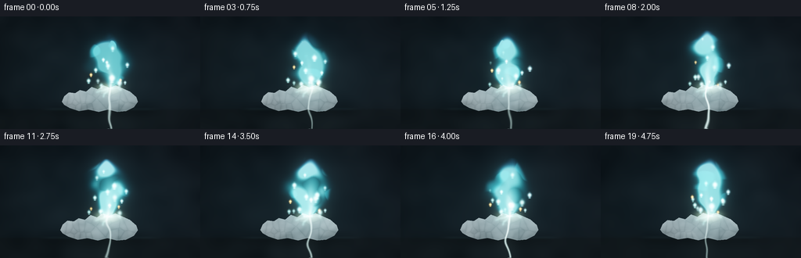
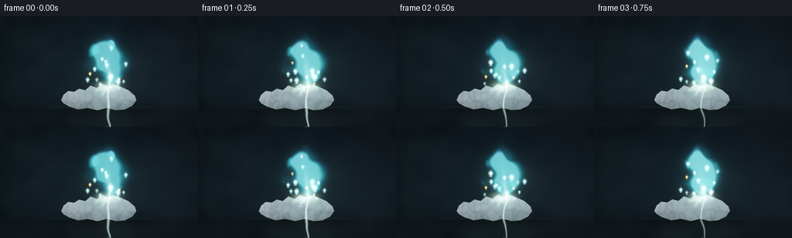
展开代码变化
--- 上一保存版本
+++ 本次保存版本
@@ -248,7 +248,8 @@
+ 0.004 * n_smooth * 0.09
)
main_center = base_x + sway * flame_h * (0.25 + uc**1.35)
- main_width = (0.042 + 0.185 * np.sin(np.pi * uc) ** 0.78) * flame_h
+ main_profile = np.clip(np.sin(np.pi * uc), 0.0, 1.0)
+ main_width = (0.042 + 0.185 * main_profile**0.78) * flame_h
main_width *= 0.88 + 0.12 * np.sin(2 * np.pi * (0.31 * time + 0.62 * uc))
warped_x = xx + n_smooth * (1.6 * SS) + n_detail * (0.7 * SS)
main = np.exp(-0.5 * ((warped_x - main_center) / main_width) ** 2)
@@ -270,7 +271,8 @@
+ (drift * np.sin(2 * np.pi * (0.24 * time + 0.38 * tuc) + index * 1.7)) * flame_h * tuc
+ n_detail * 1.8 * SS * tuc
)
- width = (0.025 + 0.135 * np.sin(np.pi * tuc) ** 0.70) * flame_h * width_factor
+ tongue_profile = np.clip(np.sin(np.pi * tuc), 0.0, 1.0)
+ width = (0.025 + 0.135 * tongue_profile**0.70) * flame_h * width_factor
tongue = np.exp(-0.5 * ((warped_x - center) / width) ** 2)
tongue *= np.clip(1.0 - tuc, 0.0, 1.0) ** (0.62 + 0.08 * index)
tongue *= 0.42 + 0.08 * index
@@ -291,7 +293,8 @@
body = smoothstep(0.035, 0.36, body)
body *= intensity
core_center = base_x - 0.5 * SS + 1.8 * SS * np.sin(2 * np.pi * (0.36 * time + 0.45 * uc))
- core_width = (0.022 + 0.046 * np.sin(np.pi * np.clip(uc / 0.72, 0, 1)) ** 0.8) * flame_h
+ core_profile = np.clip(np.sin(np.pi * np.clip(uc / 0.72, 0.0, 1.0)), 0.0, 1.0)
+ core_width = (0.022 + 0.046 * core_profile**0.8) * flame_h
core = np.exp(-0.5 * ((warped_x - core_center) / core_width) ** 2)
core *= np.clip(1.0 - uc / 0.74, 0.0, 1.0) ** 0.55
core *= (0.90 + 0.10 * np.sin(2 * np.pi * (0.51 * time) + 1.2)) * intensity
@@ -307,28 +310,28 @@
intensity = 0.90 + 0.10 * smoothstep(0.0, 5.0, frame) + 0.018 * np.sin(frame * 1.9)
density, core, base_flare, u, center, width = flame_density(yy, xx, frame, noises, intensity)
- outer_color = np.array([0.018, 0.47, 0.53], dtype=np.float32)
- middle_color = np.array([0.07, 0.90, 0.86], dtype=np.float32)
- hot_color = np.array([0.92, 1.0, 0.95], dtype=np.float32)
- violet_color = np.array([0.34, 0.18, 0.92], dtype=np.float32)
-
- emission = density[..., None] * outer_color * 0.70
- emission += (density**2.1)[..., None] * middle_color * 1.22
- emission += (density**5.2)[..., None] * hot_color * 1.75
- violet_mix = smoothstep(0.56, 0.98, u) * density * 0.48
+ outer_color = np.array([0.008, 0.22, 0.30], dtype=np.float32)
+ middle_color = np.array([0.035, 0.64, 0.68], dtype=np.float32)
+ hot_color = np.array([0.80, 1.0, 0.97], dtype=np.float32)
+ violet_color = np.array([0.30, 0.10, 0.58], dtype=np.float32)
+
+ emission = density[..., None] * outer_color * 0.50
+ emission += (density**2.6)[..., None] * middle_color * 0.70
+ emission += (density**7.0)[..., None] * hot_color * 0.52
+ violet_mix = smoothstep(0.62, 1.03, u) * density**1.8 * 0.38
emission += violet_mix[..., None] * violet_color
- emission += (core**3.2)[..., None] * hot_color * 2.25
- emission += base_flare[..., None] * np.array([1.30, 1.65, 1.35], dtype=np.float32)
+ emission += (core**4.5)[..., None] * hot_color * 1.28
+ emission += base_flare[..., None] * np.array([0.85, 1.10, 0.84], dtype=np.float32)
# A few isolated tongues make the flame feel turbulent without becoming noisy.
wisp_field = smoothstep(0.55, 1.15, noises[1]) * smoothstep(0.05, 0.5, density)
- emission += wisp_field[..., None] * np.array([0.10, 0.38, 0.42], dtype=np.float32)
+ emission += wisp_field[..., None] * np.array([0.04, 0.20, 0.23], dtype=np.float32)
add_sparks(emission, frame, rng)
emission = np.clip(emission, 0.0, 4.0)
soft = gaussian_filter(emission, sigma=(8 * SS, 8 * SS, 0))
wide = gaussian_filter(soft, sigma=(20 * SS, 20 * SS, 0))
- return image + emission * 255.0 + soft * 62.0 + wide * 18.0, emission
+ return image + emission * 255.0 + soft * 44.0 + wide * 11.0, emission
def add_smoke(image, yy, xx, frame, noises):
@@ -417,8 +420,8 @@
# Reflection and bloom are deliberately cool, matching the lead flame.
glow = gaussian_filter(emission, sigma=(12 * SS, 12 * SS, 0))
mask = lead_geometry[0]
- image += glow * 42.0 * mask[..., None]
- image += gaussian_filter(emission, sigma=(30 * SS, 30 * SS, 0)) * 22.0
+ image += glow * 24.0 * mask[..., None]
+ image += gaussian_filter(emission, sigma=(30 * SS, 30 * SS, 0)) * 9.0
crack_glow = crack * (0.92 + 0.08 * np.sin(frame * 1.6))
image += crack_glow[..., None] * np.array([118.0, 235.0, 222.0], dtype=np.float32)
候选 03播放与检查图
点击播放 · 原生 RGB 像素
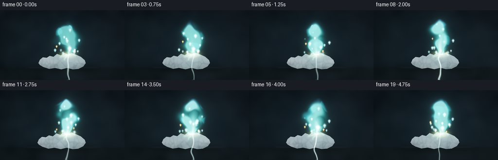
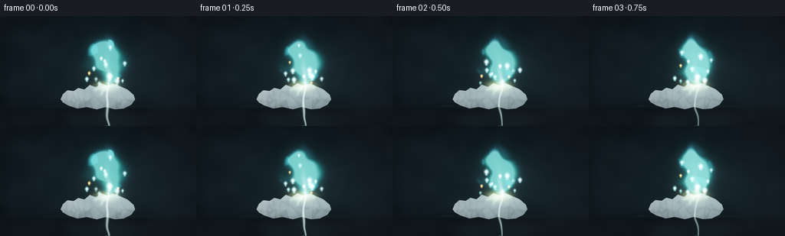
展开代码变化
--- 上一保存版本
+++ 本次保存版本
@@ -160,7 +160,7 @@
diffuse = np.clip(normal_x * light[0] + normal_y * light[1] + normal_z * light[2], 0.0, 1.0)
top_light = 1.0 - 0.50 * (yy - top) / (bottom - top + 1)
- metallic = 0.34 + 0.36 * diffuse + 0.18 * top_light
+ metallic = 0.39 + 0.39 * diffuse + 0.19 * top_light
metallic += facet_tone * 0.55 - facet_groove * 0.10
metallic = np.clip(metallic, 0.18, 0.78)
@@ -177,7 +177,7 @@
# Dull oxide dust on exposed ridges.
oxide = smoothstep(0.55, 1.45, texture_coarse / (texture_coarse.std() + 1e-6))
oxide *= 0.25 + 0.75 * top_light
- lead_rgb += oxide[..., None] * np.array([18.0, 20.0, 20.0], dtype=np.float32)
+ lead_rgb += oxide[..., None] * np.array([21.0, 21.0, 20.0], dtype=np.float32)
spec = np.clip(diffuse, 0.0, 1.0) ** 17
spec *= (0.45 + 0.55 * smoothstep(0.15, 1.0, texture_fine / (texture_fine.std() + 1e-6)))
@@ -310,8 +310,8 @@
intensity = 0.90 + 0.10 * smoothstep(0.0, 5.0, frame) + 0.018 * np.sin(frame * 1.9)
density, core, base_flare, u, center, width = flame_density(yy, xx, frame, noises, intensity)
- outer_color = np.array([0.008, 0.22, 0.30], dtype=np.float32)
- middle_color = np.array([0.035, 0.64, 0.68], dtype=np.float32)
+ outer_color = np.array([0.012, 0.22, 0.25], dtype=np.float32)
+ middle_color = np.array([0.070, 0.68, 0.59], dtype=np.float32)
hot_color = np.array([0.80, 1.0, 0.97], dtype=np.float32)
violet_color = np.array([0.30, 0.10, 0.58], dtype=np.float32)
@@ -321,7 +321,7 @@
violet_mix = smoothstep(0.62, 1.03, u) * density**1.8 * 0.38
emission += violet_mix[..., None] * violet_color
emission += (core**4.5)[..., None] * hot_color * 1.28
- emission += base_flare[..., None] * np.array([0.85, 1.10, 0.84], dtype=np.float32)
+ emission += base_flare[..., None] * np.array([1.02, 1.18, 0.66], dtype=np.float32)
# A few isolated tongues make the flame feel turbulent without becoming noisy.
wisp_field = smoothstep(0.55, 1.15, noises[1]) * smoothstep(0.05, 0.5, density)
@@ -425,7 +425,7 @@
crack_glow = crack * (0.92 + 0.08 * np.sin(frame * 1.6))
image += crack_glow[..., None] * np.array([118.0, 235.0, 222.0], dtype=np.float32)
- image += gaussian_filter(crack_glow, 2.0 * SS)[..., None] * np.array([42.0, 110.0, 105.0], dtype=np.float32)
+ image += gaussian_filter(crack_glow, 2.0 * SS)[..., None] * np.array([56.0, 108.0, 82.0], dtype=np.float32)
# Mild optical vignette and restrained film grain.
radius = np.sqrt(((xx - RW / 2) / (RW / 2)) ** 2 + ((yy - RH / 2) / (RH / 2)) ** 2)
可观测工具轨迹
实际执行的命令与返回图片。
命令 1exit 0
/bin/bash -c "pwd && rg --files -g 'prompt.txt' -g 'GENERATION_RULES.md' -g 'task_spec.json' -g '"'!**/.git/**'"'"
命令 2exit 0
/bin/bash -c "ls -la && find . -maxdepth 2 -type f -not -path './.git/*' -printf '%p %s bytes\\n' | sort"
命令 3exit 0
/bin/bash -c 'cat prompt.txt'
命令 4exit 0
/bin/bash -c 'cat GENERATION_RULES.md'
命令 5exit 0
/bin/bash -c 'cat task_spec.json'
命令 6exit 0
/bin/bash -c "sed -n '1,240p' artifact_io.py && printf '\\n--- PLAYER ---\\n' && sed -n '1,240p' player_template.html"
命令 7exit 0
/bin/bash -c "python - <<'PY'
import numpy, PIL
print('numpy', numpy.__version__)
print('PIL', PIL.__version__)
PY"命令 8exit 0
/bin/bash -c "which ffmpeg || true; which convert || true; python - <<'PY'
try:
import scipy; print('scipy', scipy.__version__)
except Exception as e: print('no scipy', e)
PY"命令 9exit 0
/bin/bash -c "python - <<'PY'
from PIL import ImageFont
for p in ['/usr/share/fonts/truetype/dejavu/DejaVuSans.ttf','/usr/share/fonts/truetype/dejavu/DejaVuSerif.ttf']:
try:
f=ImageFont.truetype(p,10); print('ok',p)
except Exception as e: print('no',p,e)
PY"命令 10exit 1
/bin/bash -c 'python generate.py'
命令 11exit 0
/bin/bash -c 'python generate.py'
命令 12exit 0
/bin/bash -c "python - <<'PY'
import generate
import numpy as np
yy, xx = np.mgrid[0:generate.RH, 0:generate.RW].astype(np.float32)
rng = np.random.default_rng(20261111)
noise_bank = generate.make_noise_bank(rng)
lead = generate.make_lead_geometry(rng)
frame = generate.render_frame(0, yy, xx, np.random.default_rng(9100), noise_bank, lead)
a = np.asarray(frame)
print(a.shape, a.dtype, a.min(), a.max(), a.mean(), np.isfinite(a).all())
from PIL import Image
Image.fromarray(a).save('.tmp/quick0.png')
PY"命令 13exit 0
/bin/bash -c "python - <<'PY'
from PIL import Image
im=Image.open('.tmp/quick0.png')
im.resize((768,432),Image.Resampling.NEAREST).save('.tmp/quick0_big.png')
PY"命令 14exit 0
/bin/bash -c "python - <<'PY'
from PIL import Image
import numpy as np
im=np.asarray(Image.open('.tmp/quick0.png')).astype(float)
for y in [20,35,50,65,80,90,100,110,120,130]:
row=im[y]
print(y, row.max(axis=0).astype(int), row.mean(axis=0).astype(int), np.unravel_index(row.mean(axis=1).argmax(), (256,))[0])
PY"命令 15exit 0
/bin/bash -c "python - <<'PY'
from PIL import Image
im=Image.open('.tmp/quick0.png')
# crop around flame and enlarge nearest for exact pixel review
im.crop((100,10,180,130)).resize((480,720),Image.Resampling.NEAREST).save('.tmp/flame_crop.png')
PY"命令 16exit 0
/bin/bash -c "python - <<'PY'
from PIL import Image
im=Image.open('.tmp/quick0.png')
# render brightness remap for visual inspection only
im.point(lambda x:min(255,int((x/255)**0.4*255))).resize((768,432),Image.Resampling.NEAREST).save('.tmp/quick0_gamma.png')
PY"命令 17exit 0
/bin/bash -c "python - <<'PY'
import generate
import numpy as np
from PIL import Image
yy, xx = np.mgrid[0:generate.RH, 0:generate.RW].astype(np.float32)
rng = np.random.default_rng(20261111)
noise_bank = generate.make_noise_bank(rng)
lead = generate.make_lead_geometry(rng)
frames=[]
for i in [0,9,19]:
frames.append(np.asarray(generate.render_frame(i, yy, xx, np.random.default_rng(9100+i), noise_bank, lead)))
Image.fromarray(frames[0]).resize((768,432),Image.Resampling.NEAREST).save('.tmp/quick1_big.png')
sheet=Image.new('RGB',(256*3,144))
for i,a in enumerate(frames): sheet.paste(Image.fromarray(a),(256*i,0))
sheet.resize((1152,216),Image.Resampling.NEAREST).save('.tmp/quick1_sheet.png')
PY"命令 18exit 0
/bin/bash -c "python - <<'PY' import generate import numpy as np yy, xx = np.mgrid[0:generate.RH, 0:generate.RW].astype(np.float32) rng = np.random.default_rng(20261111) noise_bank = generate.make_noise_bank(rng) noise=generate.frame_noise(noise_bank,0) intensity=0.90 for x,y in [(139,40),(139,60),(139,80),(139,90),(132,60),(146,60),(130,80),(148,80)]: d,c,b,u,_,_=generate.flame_density(yy,xx,0,noise,intensity) print(x,y,'u',round(float(u[y*3,x*3]),2),'d',round(float(d[y*3,x*3]),2),'c',round(float(c[y*3,x*3]),2),'b',round(float(b[y*3,x*3]),2)) PY"
命令 19exit 1
/bin/bash -c "python - <<'PY'
import generate
import numpy as np
from PIL import Image
yy, xx = np.mgrid[0:generate.RH, 0:generate.RW].astype(np.float32)
rng=np.random.default_rng(20261111); nb=generate.make_noise_bank(rng); lead=generate.make_lead_geometry(rng)
n=generate.frame_noise(nb,0)
bg=generate.render_background(yy,xx,n)
leadimg,crack=generate.render_lead(bg,yy,xx,n,np.random.default_rng(9100),*lead[:3])
sm=generate.add_smoke(leadimg,yy,xx,0,n)
fi,em=generate.render_flame(sm,yy,xx,0,n,np.random.default_rng(9100))
for name,arr in [('bg',bg),('lead',leadimg),('smoke',sm),('flame',fi),('em',em)]:
x=np.asarray(arr)
print(name, x.shape, float(np.nanmin(x)),float(np.nanmax(x)),float(np.nanmean(x)))
# no bloom image output directly
x=np.clip(fi/255,0,None); x=1-np.exp(-1.65*x); x=np.clip(x,0,1)**(1/1.06)
pil=generate.apply_camera(x,0)
Image.fromarray(pil).resize((768,432),Image.Resampling.NEAREST).save('.tmp/prebloom.png')
PY"命令 20exit 0
/bin/bash -c "python - <<'PY'
import generate
import numpy as np
from PIL import Image
yy, xx = np.mgrid[0:generate.RH, 0:generate.RW].astype(np.float32)
rng=np.random.default_rng(20261111); nb=generate.make_noise_bank(rng); lead=generate.make_lead_geometry(rng)
n=generate.frame_noise(nb,0)
bg=generate.render_background(yy,xx,n)
leadimg,crack=generate.render_lead(bg,yy,xx,n,np.random.default_rng(9100),*lead[:3])
sm=generate.add_smoke(leadimg,yy,xx,0,n)
fi,em=generate.render_flame(sm,yy,xx,0,n,np.random.default_rng(9100))
for k,arr in enumerate([bg,leadimg,sm,fi]):
x=np.clip(arr/255,0,None); x=1-np.exp(-1.65*x); x=np.clip(x,0,1)**(1/1.06)
p=generate.apply_camera(x,0); p.resize((768,432),Image.Resampling.NEAREST).save(f'.tmp/stage{k}.png')
PY"命令 21exit 0
/bin/bash -c "python - <<'PY'
import generate
import numpy as np
from PIL import Image
yy, xx = np.mgrid[0:generate.RH, 0:generate.RW].astype(np.float32)
rng=np.random.default_rng(20261111); nb=generate.make_noise_bank(rng); lead=generate.make_lead_geometry(rng)
n=generate.frame_noise(nb,0)
sm=generate.add_smoke(generate.render_lead(generate.render_background(yy,xx,n),yy,xx,n,np.random.default_rng(9100),*lead[:3])[0],yy,xx,0,n)
fi,em=generate.render_flame(sm,yy,xx,0,n,np.random.default_rng(9100))
x=np.clip(fi/255,0,None); x=1-np.exp(-1.65*x); x=np.clip(x,0,1)**(1/1.06)
p=generate.apply_camera(x,0)
p.crop((105,5,175,125)).resize((560,960),Image.Resampling.NEAREST).save('.tmp/stage3_crop.png')
print(np.asarray(p)[40:100,130:150,1].max())
PY"命令 22exit 0
/bin/bash -c "python - <<'PY'
from PIL import Image
import numpy as np
im=np.asarray(Image.open('.tmp/quick1_big.png'))
for y in [10,20,30,40,50,60,70,80,90,100,110,120]:
# sample 3x3 max centered around 139
ys=y*3; xs=139*3
p=im[ys-3:ys+4,xs-3:xs+4]
print(y,p.max(axis=(0,1)),p.mean(axis=(0,1)).astype(int))
PY"命令 23exit 0
/bin/bash -c "python - <<'PY'
from PIL import Image
import numpy as np
im=np.asarray(Image.open('.tmp/quick1_big.png')).astype(float)
for y in [50,60,70,80,90,100]:
row=im[y*3]
x=row[:,1].argmax(); print(y,x,row[x].astype(int),row[:,1].mean().round(1))
PY"命令 24exit 0
/bin/bash -c "python - <<'PY'
import generate
import numpy as np
yy,xx=np.mgrid[0:generate.RH,0:generate.RW].astype(np.float32)
rng=np.random.default_rng(20261111); nb=generate.make_noise_bank(rng); lead=generate.make_lead_geometry(rng)
n=generate.frame_noise(nb,0)
bg=generate.render_background(yy,xx,n)
im,crack=generate.render_lead(bg,yy,xx,n,np.random.default_rng(9100),*lead[:3])
mask=lead[0]
# rgb inside
for name, arr in [('bg',bg),('lead',im)]:
print(name, np.percentile(arr[mask,0],[1,50,99]),np.percentile(arr[mask,1],[1,50,99]))
print('mask count',mask.sum())
PY"命令 25exit 0
/bin/bash -c "python - <<'PY'
from PIL import Image
im=Image.open('.tmp/quick1_big.png')
# just show full rendered image at 4x no modifications
print(im.size)
PY"命令 26exit 1
/bin/bash -c "python - <<'PY'
import generate, numpy as np
from PIL import Image
yy,xx=np.mgrid[0:generate.RH,0:generate.RW].astype(np.float32)
rng=np.random.default_rng(20261111); nb=generate.make_noise_bank(rng); lead=generate.make_lead_geometry(rng)
n=generate.frame_noise(nb,0)
bg=generate.render_background(yy,xx,n)
im,crack=generate.render_lead(bg,yy,xx,n,np.random.default_rng(9100),*lead[:3])
x=np.clip(im/255,0,None); x=1-np.exp(-1.65*x); x=np.clip(x,0,1)**(1/1.06)
p=generate.apply_camera(x,0)
Image.fromarray(p).resize((768,432),Image.Resampling.NEAREST).save('.tmp/leadonly.png')
PY"命令 27exit 0
/bin/bash -c "python - <<'PY'
import generate, numpy as np
from PIL import Image
yy,xx=np.mgrid[0:generate.RH,0:generate.RW].astype(np.float32)
rng=np.random.default_rng(20261111); nb=generate.make_noise_bank(rng); lead=generate.make_lead_geometry(rng)
n=generate.frame_noise(nb,0)
bg=generate.render_background(yy,xx,n)
im,crack=generate.render_lead(bg,yy,xx,n,np.random.default_rng(9100),*lead[:3])
x=np.clip(im/255,0,None); x=1-np.exp(-1.65*x); x=np.clip(x,0,1)**(1/1.06)
p=generate.apply_camera(x,0)
p.resize((768,432),Image.Resampling.NEAREST).save('.tmp/leadonly.png')
PY"命令 28exit 0
/bin/bash -c "python - <<'PY'
import numpy as np
from PIL import Image
im=np.asarray(Image.open('.tmp/quick1_big.png'))
# inspect flame width by green threshold at each y
for y in range(20,100,5):
r=im[y*3]
mask=r[:,1]>60
if mask.any():
inds=np.where(mask)[0]; print(y, round(inds.min()/3,1),round(inds.max()/3,1), 'n',len(inds))
PY"命令 29exit 0
/bin/bash -c 'python generate.py'
命令 30exit 0
/bin/bash -c "python - <<'PY'
from pathlib import Path
from PIL import Image
import numpy as np, json
root=Path('.')
frames=sorted((root/'frames').glob('*.png'))
arr=np.stack([np.asarray(Image.open(p)) for p in frames])
print('frames',len(frames),'shape',arr.shape,'dtype',arr.dtype)
print('finite',np.isfinite(arr).all(),'mean',arr.mean().round(2),'min/max',arr.min(),arr.max())
means=arr.mean(axis=(1,2,3)); diffs=np.abs(arr[1:].astype(float)-arr[:-1]).mean(axis=(1,2,3))
print('per-frame mean',np.round(means,1).tolist())
print('successive mean abs diff',np.round(diffs,2).tolist())
z=np.load(root/'pixels.npz'); print('pixels.npz',z['pixels'].shape,z['pixels'].dtype)
html=(root/'index.html').read_text(); print('index.html bytes',len(html),'has data', '__DATA__' not in html and 'const DATA=' in html)
print('artifacts',sorted(p.name for p in root.iterdir() if p.is_file()))
PY"命令 31exit 0
/bin/bash -c "python - <<'PY'
from PIL import Image
import numpy as np
im=np.asarray(Image.open('frames/00.png')).astype(np.float32)
# compare median background and key regions
print('bg patch',im[20:35,20:50].mean((0,1)).round(1))
print('lead patch',im[105:115,100:170].mean((0,1)).round(1))
print('flame lower',im[60:90,125:155].mean((0,1)).round(1))
print('flame upper',im[25:55,125:155].mean((0,1)).round(1))
# Check center of metal and flame bbox
m=(im[...,1]>60)&(im[...,2]>60)
ys,xs=np.where(m); print('bright bbox',xs.min(),ys.min(),xs.max(),ys.max())
PY"命令 32exit 0
/bin/bash -c 'cp inspection.png .tmp/candidate_v1_inspection.png && cp -r frames .tmp/candidate_v1_frames && cp pixels.npz .tmp/candidate_v1_pixels.npz'
命令 33exit 0
/bin/bash -c "python - <<'PY'
import generate, numpy as np
from PIL import Image
yy,xx=np.mgrid[0:generate.RH,0:generate.RW].astype(np.float32)
rng=np.random.default_rng(20261111); nb=generate.make_noise_bank(rng); lead=generate.make_lead_geometry(rng)
frames=[]
for i in [0,9,19]: frames.append(np.asarray(generate.render_frame(i,yy,xx,np.random.default_rng(9100+i),nb,lead)))
Image.fromarray(frames[0]).resize((768,432),Image.Resampling.NEAREST).save('.tmp/v2_big.png')
sheet=Image.new('RGB',(768,144))
for i,a in enumerate(frames):sheet.paste(Image.fromarray(a),(256*i,0))
sheet.resize((1152,216),Image.Resampling.NEAREST).save('.tmp/v2_sheet.png')
PY"命令 34exit 0
/bin/bash -c 'python generate.py'
命令 35exit 0
/bin/bash -c "python - <<'PY'
from pathlib import Path
from PIL import Image
import numpy as np, json, re
root=Path('.')
frames=sorted((root/'frames').glob('*.png'))
arr=np.stack([np.asarray(Image.open(p)) for p in frames])
spec=json.loads((root/'task_spec.json').read_text())
assert arr.shape==(spec['frames'],spec['height'],spec['width'],3) and arr.dtype==np.uint8
assert np.isfinite(arr).all()
diffs=np.abs(arr[1:].astype(np.int16)-arr[:-1]).mean(axis=(1,2,3))
z=np.load(root/'pixels.npz')['pixels']
assert z.shape==(spec['height'],spec['width'],spec['frames']) and z.dtype==np.uint32
html=(root/'index.html').read_text()
assert '__DATA__' not in html and '__ID__' not in html and 'const DATA={' in html
print('validated',arr.shape,'mean',round(float(arr.mean()),2),'range',int(arr.min()),int(arr.max()))
print('motion',round(float(diffs.min()),2),'-',round(float(diffs.max()),2),'mean',round(float(diffs.mean()),2))
print('files',[(p.name,p.stat().st_size) for p in sorted(root.iterdir()) if p.is_file()])
PY"视觉工具实际返回图片 1

视觉工具实际返回图片 2
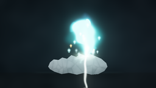
视觉工具实际返回图片 3
视觉工具实际返回图片 4
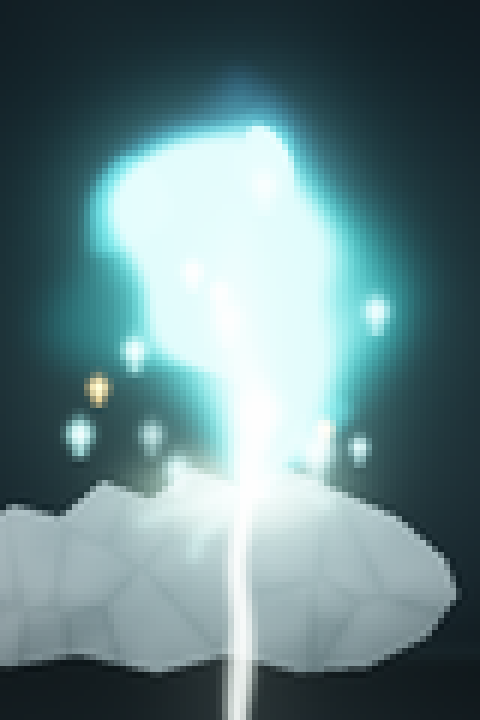
视觉工具实际返回图片 5
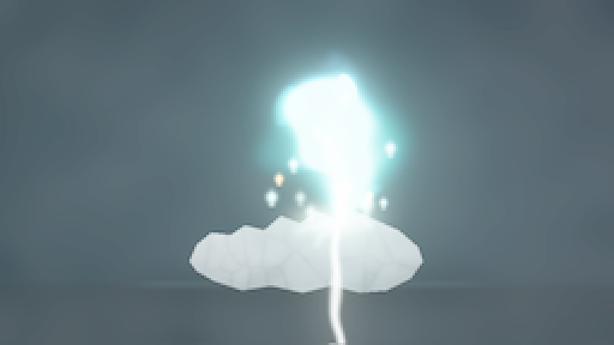
视觉工具实际返回图片 6
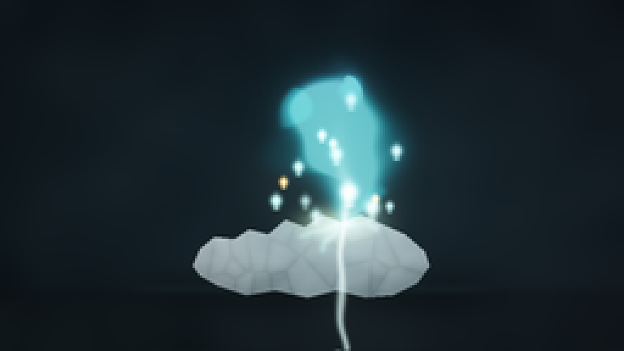
视觉工具实际返回图片 7
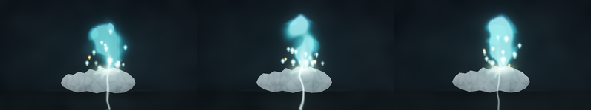
视觉工具实际返回图片 8
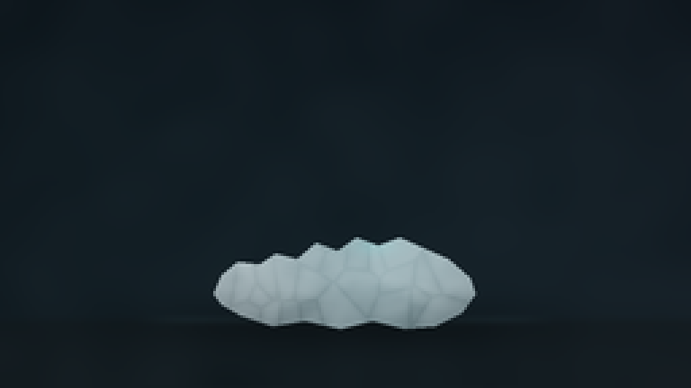
视觉工具实际返回图片 9
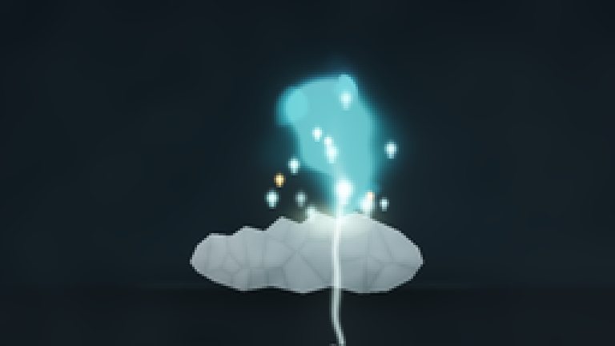
视觉工具实际返回图片 10
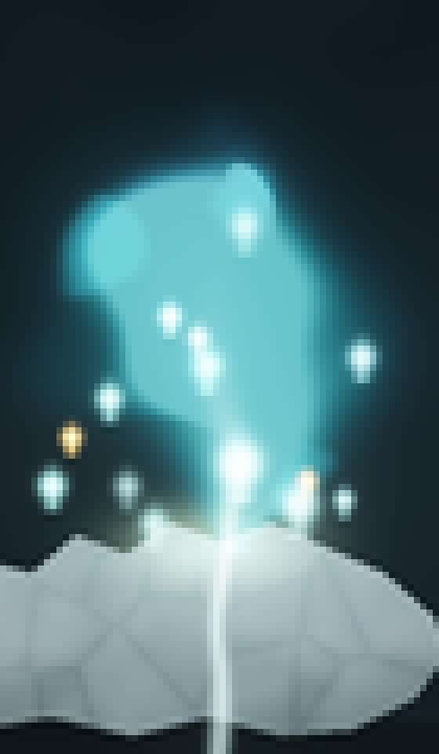
视觉工具实际返回图片 11
视觉工具实际返回图片 12
视觉工具实际返回图片 13

视觉工具实际返回图片 14

视觉工具实际返回图片 15
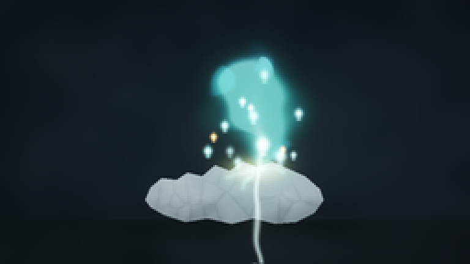
视觉工具实际返回图片 16
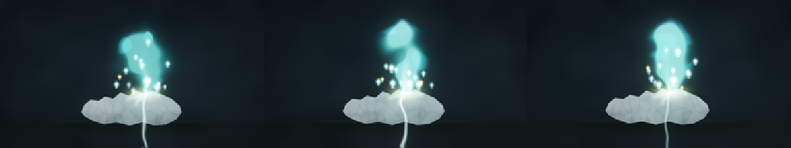
视觉工具实际返回图片 17

保存候选 3 份；完成命令 35 次；可验证图片返回 17 张。原始 API 响应与完整日志保留在本地。